RAPID GEOMETRY INTERROGATION FOR A UNIFORM VOLUME ELEMENT-BASED MONTE CARLO PARTICLE TRANSPORT SIMULATION
by
Michael William Frandsen
A thesis submitted in partial fulfillment
of the requirements for the degree
of
Master of Science
in
Computer Science
MONTANA STATE UNIVERSITY—BOZEMAN
Bozeman, Montana
April 1998
ACKNOWLEDGEMENTS
This work was sponsored by the U.S. D.O.E., Office of Energy Research, through INEEL under Contract DE-AC07-94ID13223.
Thanks are given to Floyd Wheeler of the INEEL for providing the Monte Carlo transport simulation results and to Dan Wessol, also of the INEEL, for introducing me to the problem at hand and starting me down the path of uniform volume element tracking. Thanks are also given to my wife for her constant support and assistance in editing this thesis – not to mention the many hours she let me spend in front of her computer instead of with her.
TABLE OF CONTENTS
BACKGROUND INFORMATION *
Boron Neutron Capture *
Boron Neutron Capture Therapy *
Boron Neutron Capture Therapy for Glioblastoma Multiforme *
Clinical Trials *
BNCT Planning Process *
BNCT Treatment Plan Validation *
INTRODUCTION *
Problem Statement *
ANALYSIS OF CURRENT TRACKING TECHNIQUE *
Non-Uniform Rational B-Spline Surface Descriptions *
Positive Aspects of NURBS *
Problems with NURBS *
UNIFORM VOLUME ELEMENTS PROPOSED *
Description *
Advantages *
Disadvantages *
TWO-DIMENSIONAL TRACKING TECHNIQUES *
Common Integer-Based Representative Line Algorithm *
Adaptation to Investigate All Pixels Intersected by Ideal Line *
Relation to Ray Tracking *
Discussion of Extension to Non-Grid Points *
Discussion of Two-Dimensional Tracking Error *
EXTENSION TO TRACKING IN THREE DIMENSIONS *
Sample Problem *
Representative Elements Intersected by Ideal Line Examined *
Representative Elements Intersected for Sample Problem *
All Elements Intersected by Ideal Line Examined *
All Elements Intersected for Sample Problem *
RESULTS *
How the Algorithms Fared *
Error Analysis of Only Examining Representative Univels along the Ideal Line *
Analysis of Greater Distance Covered in Examining Only Representative Univels Along the Ideal Line *
Monte Carlo Transport Simulation Results *
CONCLUSIONS *
Future Directions *
REFERENCES *
APPENDIX *
Three-Dimensional Algorithm to Examine Representative Univels along Line *
Three-Dimensional Algorithm to Examine All Univels Intersected by Line *
Timing Comparisons of Various Algorithms through Same Number of Elements *
LIST OF TABLES
Table 1: Univel Locations and Sampling Points for Sample Problem *
Table 2: Univel Locations, Entrant Face Intersections, and Distance Inside each Univel for Sample Problem *
Table 3: Best to Worst Performance for 1000 Univels *
Table 4: Best to Worst Performance for Initialization *
Table 5: Best to Worst Performance for 10 Univels *
Table 6: Best to Worst Performance for 20 Univels *
Table 7: Processor Time Requirements for Patient Irradiation Simulation *
LIST OF FIGURES
Figure 1: Uniform Volume Element Structure and Storage *
Figure 2: From Medical Images to Univels *
Figure 3: Sides "Owned" by a Pixel and a Univel *
Figure 4: Two Possibilities for Drawing Pixels along a Line *
Figure 5: Integer-Based Algorithm to Plot Representative Line between Grid Points *
Figure 6: Integer-Based Algorithm to Plot All Pixels along Line between Grid Points *
Figure 7: Maximum Skipped Segment Length within a Pixel *
Figure 8: Sample Three-Dimensional Line *
Figure 9: Calculation of an Initial Error Term for the Centered Y-Value *
Figure 10: Graphical View of Intersected Representative Univels for Sample Problem *
Figure 11: Distances to Each Candidate Face *
Figure 12: Examination of Error Terms to find which Coordinate to Increment *
Figure 13: Graphical View of All Intersected Univels for Sample Problem *
Figure 14: Long-Term Performance of Various Tracking Algorithms *
Figure 15: Typical Performance of Candidate Tracking Algorithms *
Figure 16: Wireframe Representation of Surfaces for Head, Brain and Target Regions *
Figure 17: Two-Dimensional Slice Showing Relationship of BMRR Beam Delimiter for the rtt_MC Model of the Head with an 8-cm Depth Target *
ABSTRACT
New particle tracking methods to speed Boron Neutron Capture Therapy (BNCT) Monte Carlo treatment simulations were investigated. Presently, the Idaho National Engineering and Environmental Laboratory (INEEL) and Montana State University (MSU) treatment planning software uses Non-Uniform Rational B-Spline (NURBS) surfaces to allow construction of a patient model from medical image scans. Radiation doses are then calculated using a Monte Carlo transport method that employs a ray-tracing algorithm to find intersections in the NURBS geometry.
To obtain statistically significant results, a Monte Carlo treatment simulation can easily require several hours. A profile of the simulation has revealed that between 65 and 90 percent of the time is spent in computing particle intersections with NURBS surfaces. Performance tuning in this area could result in substantial time savings.
The new algorithms track rays through uniform volume elements (univels) rather than finding intersections with NURBS surfaces. Line rasterization methods have been adapted to allow fast tracking through the univels. Simulation times have been measured on Pentium Pro systems with greater than 64 MB of RAM. Resultant accuracy was measured by comparing the results to that of a problem with an accepted answer.
Results indicate that the new univel-based tracking methods are approximately 50 times faster than the NURBS-based methods. By incorporating these new tracking methods into the Monte Carlo simulations, speedups by factors of 6 to 10 are common. Accuracy was maintained by scaling the univels to match the precision of the original image data. The results of the new simulations have been shown to be well within the accepted experimental error.
The new univel-based particle tracking methods outperform the NURBS-based methods. The univel geometry is a simple representation that can be easily generated. The freedom of independently labeling individual univels as a particular material allows creation of arbitrarily shaped bodies not easily represented by a NURBS surface. Because of the speed and success of the newer tracking methods, the future BNCT planning process will be entirely univel-based. Many of the developed tools, methods, and representations could also be applied to non-medical problems and other transport simulations.
The principle of Boron Neutron Capture (BNC) is that a neutron striking a 10B nucleus can produce 11B which fissions into Lithium (7Li) and Helium (a -particle) nuclei. The probability of neutron capture by 10B is orders of magnitude greater than for constituent nuclides of biological matter and this probability is inversely proportional to the neutron kinetic energy of the neutron. The Lithium and Helium nuclei are directed opposite each other with significant energy.
Boron Neutron Capture Therapy (BNCT) is a method that uses this reaction as a treatment modality. 10B is introduced to the patient by injection of an appropriate amount of one of a variety of Boron compounds that are not toxic for prescribed doses. After some time has elapsed, the Boron compound has been delivered throughout the body through the bloodstream. The compound is engineered to target the tumor cells. Also, because cancer cells have an abnormally high growth rate, they take in more of the Boron compound than nearby healthy tissue. To produce the reactions, a neutron beam is directed at the cancer area. The treatment consists of turning the beam on for an amount of time, typically one-half to one hour, determined by the beam’s neutron intensity. The Boron Neutron Capture reaction inactivates the host cell and, with much lower probability, some nearby cells when the Boron fissions. The beam path and concentration of the Boron compound in the cancer cells focuses on destroying cancerous tumor cells and sparing healthy tissue to the greatest extent possible.
Boron Neutron Capture Therapy for Glioblastoma Multiforme
Montana State University (MSU) and the Idaho National Engineering and Environmental Laboratory (INEEL) have been involved with creating the user interface to the planning software for treating patients with a specific brain tumor called Glioblastoma Multiforme since 1991. This cancer affects 7000 people in the U.S. each year and is generally considered fatal within six months if untreated or perhaps one year even with treatment.
The reason Boron Neutron Capture Therapy is a treatment candidate for Glioblastoma Multiforme is multi-faceted. Conventional methods of therapy are not optimal. Removal of the tumor through surgery alone often results in tumor regrowth due to the difficulty of removing the small tumor tendrils in nearby tissue without also removing much of the surrounding healthy brain mass. In Boron Neutron Capture Therapy, some researchers consider the neutron beam as effective on the tumor tendrils as it is on the tumor bulk although the bulk is often removed through surgery prior to Boron Neutron Capture Therapy. The Boron compound concentrates in the tumor and therefore the cell kill is concentrated only in areas near the tumor. Only cells within the range of the reaction products, approximately one cell diameter, are destroyed.
The early-stage clinical trials of Boron Neutron Capture Therapy for treatment of Glioblastoma Multiforme are promising. At this time, clinical trials have been conducted on only 36 patients at Brookhaven National Laboratory (BNL) during the initial U. S. clinical trials. In the future, there may be a much greater demand for this type of treatment. Additionally, the method is also being explored for treating or assisting in the treatment of other types of cancer such as lung cancer. This potential rise in demand for Boron Neutron Capture Therapy will require planning software optimized for patient throughput. Optimizations to the current software are necessary to meet these demands.
Although Boron Neutron Capture Therapy itself can be conducted in a short session, the planning for that treatment has many stages. The patient must undergo a medical scan such as Nuclear Magnetic Resonance Imaging (NMRI) or Computed Tomography (CT). Next, physicians determine the locations of important structures such as the scalp, skull, brain, target area, and tumor by analyzing the digitized medical scans. Additionally, critical areas are marked for avoidance. The physician often does the marking by outlining structures of interest on several medical images. The stacked slices are then representative of the patient's head and internal regions of interest. Three-dimensional visualization software can be used to observe and verify the location of the defined structures. The three-dimensional views are also useful for the physician to determine an appropriate beam intensity and beam direction for the therapy.
BNCT Treatment Plan Validation
Before the treatment proceeds, simulation software must determine the optimal irradiation geometry and irradiation time. A Monte Carlo simulation developed at the Idaho National Engineering and Environmental Laboratory is used to track millions of particle paths and calculate the radiation doses associated with the treatment. Radiation isodoses are then superimposed over the original medical images to aid physicians in development of a treatment plan.
Although the planning software interface developed by Montana State University and the Idaho National Engineering and Environmental Laboratory is widely used throughout the world for these types of treatments, enhancements could be made to minimize the time required for the planning process.
The method presented here is used primarily to model neutron/photon transport for BNCT although it could be applied to model most transport processes where the geometry is first decomposed into univels.
The INEEL and MSU BNCT collaboration has developed a graphical environment for reconstructing univel and NURBS-based solid models derived from medical images. These solid models form the geometric basis of the tumor-target areas and surrounding healthy tissue for the BNCT [1] treatment planning radiation transport model [2, 3]. The system manipulates and samples medical images so that accurate geometric models of imaged anatomical features can be created and viewed.
Computer simulations that model a proposed treatment plan to determine its efficacy are part of the planning stage of BNCT for glioblastoma treatment. It has been found that these simulations can take substantial amounts of time. One major component of these simulations is the need to track simulated rays through the materials of interest and report intersection distances to these regions. A typical simulation on a high-speed computer may require three hours to track an adequate number of particles. It has been determined that 65% to 90% of this time is spent in tracking particles from one region of interest in the NURBS geometry to the next and returning a distance to this intersection. If this bottleneck can be reduced, the overall simulation time can be reduced dramatically.
This thesis is an investigation and construction of techniques to decrease the computational time required by Boron Neutron Capture Therapy Monte Carlo transport simulations by optimizing the particle tracking routines.
ANALYSIS OF CURRENT TRACKING TECHNIQUE
Non-Uniform Rational B-Spline Surface Descriptions
The current tracking routine is based on interrogating Non-Uniform Rational B-Spline (NURBS) surfaces. Using NURBS is one method of fitting a smooth curve to a set of control points. Many NURBS curves at different heights can be joined to produce a NURBS surface. Only a relatively small set of control points is required to describe a NURBS surface. For BNCT, the NURBS control points for a given structure are generally defined on 5 to 40 parallel medical images depending on the size of the structure. Each object in each slice may be defined with 10 to 20 control points, yielding approximately 50 to 800 control points to describe a given structure. The number of control points will depend on both the size of the structure and how accurately the structure must be represented.
Given these control points and a degree for the NURBS surface, a resultant outer boundary of the structure is defined. Generally, a quadratic fit is used for the control points. A linear fit would produce a flat-faced polygon whereas a cubic or higher fit does not follow the control points as closely. Therefore, a quadratic fit seems most representative of the underlying surfaces.
For many reasons, NURBS are an appropriate representation for the surfaces of the regions of interest. Even with a small number of control points, the NURBS surface can fairly accurately depict most anatomical structures of interest. The NURBS exhibit very good local control and can be easily adjusted with the control points. The resultant structures lend themselves well to smooth three-dimensional surface renderings for visualization. The compact representation consisting of a small number of ordered control points and degree for the NURBS surface requires little memory to describe the geometry.
Until the last few years, computer memory has been at a premium. Another reason for the original selection of NURBS surfaces is due to the greater memory requirements of many other representations. Today, this is not nearly as much of a problem. On the contrary, users today suffer because of the trade-off that storage is minimized at the expense of requiring more computation time when the surface is computed or the geometry is interrogated. The control points are a minimum description for the NURBS mathematical structure. A lot of computations are required to determine if a given point is inside, outside, or on a given NURBS surface. Current methods used for determining the first point of intersection of a ray with a NURBS surface use bounding boxes of decreasing size to either hone in on the point of intersection or determine that no intersection occurs. This method of computing intersections is valid and has been used for the treatment simulations but is time-consuming and not without some other flaws.
In addition to the high computation requirements of computing intersections with NURBS surfaces there are problems of lost particles and overlapping structures. Due to precision problems, lost particles are common in NURBS geometries when surfaces are near each other. Somewhat related to this is the problem of overlapping surfaces. A user could inadvertently create control points that cause close NURBS surfaces to overlap. When overlap occurs, the volume within the overlap is indeterminate as to what structure it belongs to.
Another problem is that certain types of structures are difficult to represent with NURBS. Structures that branch and structures with multiple connected components produce problems. Typically, these surfaces are either approximated by something that the NURBS can describe or require multiple NURBS for their definition. If multiple NURBS are used, gaps or overlaps could be present where the underlying structures should be connected.
Given these problems with both the interrogation time requirements and potential ambiguities in the description, it is worthwhile to investigate other representations for the regions of interest and associated tracking methods.
UNIFORM VOLUME ELEMENTS PROPOSED
A uniform volume element (univel) will describe the volume enclosed in a right parallelepiped (or rectangular box). The term voxel is not used because just as pixels are generally considered squares, voxels are generally considered cubes. Here, each uniform volume element has the same length, width, and height but the shape is not necessarily a cube. Many univels can be placed adjacent to each other to describe a volume. Even though each univel is box-like, the elements can describe a structure of arbitrary precision determined by the univel size. Greater accuracy will require more storage. Figure 1 shows what a typical univel might look like along with its normalized representation for array storage.
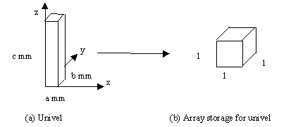
Figure 1: Uniform Volume Element Structure and Storage
Univels are proposed as an alternative to the NURBS representation because of the following advantages. The univel representation of a volume can easily be thought of as a three-dimensional array of volume elements. In this array representation, it is computationally simple to find what structure is present at a given point in space. Intersections of a ray with an edge of a structure would require tracking the ray through the three-dimensional array until a volume element of a new material type is encountered. The array mathematics is considerably simpler and also quicker than the NURBS mathematics required for tracking an equivalent ray.
The univel representation can also be made to have a simple correspondence with the original medical image slices. If the univels are to be the same resolution as the medical image slices, each pixel on a medical image slice will correspond directly to one univel. The univels can then be stored and retrieved much the same as the original medical image slices. Using univels of finer resolution is certainly possible but the structure would be determined more accurately than the original data. The amount of data available does not lend itself well to support this gain in the resolution of the resultant defined structures. Using univels of a lesser resolution would reduce geometric accuracy.
Another advantage is that each univel can be labeled independently as any particular material. There cannot be a problem of overlapping regions and there is no problem of adjusting control points for a surface boundary to accurately fit an underlying structure. Rather than using control points, each individual element is labeled with an appropriate material.
Finally, the memory demands of the univels are approximately the same as the original medical images and by no means a problem on today's computer systems.
Figure 2 illustrates how the univels relate to the original medical images. In this case, Figure 2a shows three slices each of 4x4 resolution that comprise the stacked image set. For each pixel, a corresponding univel will be created. Figure 2b shows what the stacked univels might look like. The dashed lines indicate the positions of the original medical image slices that are usually located at the transverse midpoint of the univels. Figure 2c illustrates a graphical representation of the three-dimensional array that the univel information will be stored in.
Figure 2: From Medical Images to Univels
Although univels are useful for the purposes described herein, they do have their disadvantages. The storage required for univels is greater than that of many other volume (or surface) representations. The box-like shape does not preserve the surface area of the represented volume. Additionally, curved surfaces are stair-stepped to a degree depending on the size of the univels. Because of the stair-steps, computation of normal vectors is not very informative. However, these are not concerns for the Monte Carlo simulations.
TWO-DIMENSIONAL TRACKING TECHNIQUES
It is simpler to first analyze the two-dimensional problem before discussing tracking in three dimensions. The two-dimensional problem is similar to drawing a line of pixels on a computer graphics display. Because this is such a common task, many algorithms were developed for efficiently drawing lines.
Some references consider a pixel as a grid point occurring at the intersection of two gridlines. Other references consider a pixel to cover the area between two adjacent horizontal and vertical gridlines. Here, the latter view will be taken. Assuming the grid is composed of horizontal and vertical lines for each integral value of x and y, the center of any pixel lies at (I+1/2, J+1/2) where I and J are arbitrary integers. However, the entire pixel can simply be referenced by (I, J). To settle the ambiguity of which edges belong to a pixel and which to its adjacent neighbors, some heuristic must be used. As recommended by the Graphics Gems series [4], the floor function will be used to determine which pixel (or later which volume element) contains a given floating point ordered pair (or ordered triple). In other words, the pixel denoted by (I, J) will span the area enclosed by: I<=x<I+1 and J<=y<J+1. Figure 3 gives a graphical representation of this in both two and three dimensions.
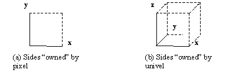
Figure 3: Sides "Owned" by a Pixel and a Univel
Common Integer-Based Representative Line Algorithm
Many standard line algorithms plot one pixel for each integral value of whichever of x or y varies most. They typically draw a representative line rather than plot every pixel intersected by the ideal line. An early and very fast technique for plotting pixel-based lines was developed by Bresenham [5]. Other algorithms such as the midpoint scan line algorithm [6] use similar techniques. Figure 4a shows all pixels intersected by a line and Figure 4b shows the pixels that Bresenham’s algorithm would display.
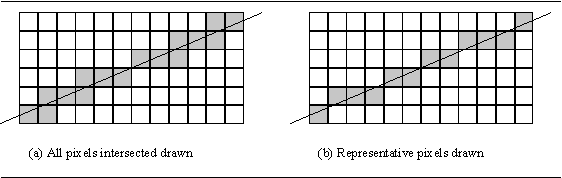
Figure 4: Two Possibilities for Drawing Pixels along a Line
In Figure 4b, x varies most rapidly so the algorithm must compute a y-value for each x-value. Of course, these pixels can be generated many different ways. Bresenham’s algorithm is efficient because it is based on integer arithmetic and comparisons that are both very fast operations for most chip architectures. The algorithm determines when y changes as x is incremented. The code segment in Figure 5 gives a version of this algorithm in the case of x varying most rapidly and with both x and y increasing. Symmetry can be applied to cover all possible cases.
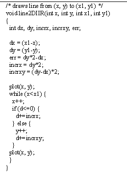
Figure 5: Integer-Based Algorithm to Plot Representative Line between Grid Points
To understand the previous algorithm, it is important to look at the implicit equation describing a line in the x-y plane:
x*dy – y*dx +c = err(x, y)
When err(x, y)=0, the point (x, y) lies on the line. The error is zero for the first and last pixel because the line is determined by connecting the centers of the first and last pixels. The error term is often shifted and multiplied by constant factors in order to make comparisons of it against zero. For the interior pixels, the resultant error is used to determine when y should be increased and when it should remain the same.
Adaptation to Investigate All Pixels Intersected by Ideal Line
In the previous case, each iteration incremented x by 1 and the algorithm determined whether or not y should be incremented. A similar algorithm can be developed to investigate all pixels intersected by the ideal line. In the case of x and y both increasing, the value of the error at the top right corner of a pixel can be used to decide which coordinate to increment. By investigating the error at this point, the algorithm can decide if the ideal line first intersects the top horizontal line or the right vertical line. For the implicit equation as given and for positive dx and dy, increasing x increases the value of the error and increasing y decreases the error. If the error is greater than zero then y must be increased to lower the error. If the error is less than zero then x must be increased to increase the error. In the case where the error is equal to zero, the line exits the pixel through the top right corner, indicating both x and y should be increased. In this case, it is common to arbitrarily increase x or y and the other component will be increased in the next iteration. This reduces the number of comparisons with the only side effect of plotting a pixel who was only intersected by the ideal line at a corner. A version of this algorithm for both x and y increasing is given in Figure 6.
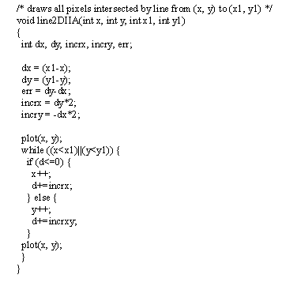
Figure 6: Integer-Based Algorithm to Plot All Pixels along Line between Grid Points
Tracking through two-dimensional uniform elements seems very similar to drawing two-dimensional lines with some key differences. Drawing of raster graphics on a computer display is mostly a matter of appearance that does not concern itself with the degree of accuracy that will be required for the univel tracking. Whereas drawing a line on a computer screen consists of specifying integer coordinates for the starting point and ending point of the line, tracing a ray through the univels must start at a specified position within the first univel. Using the computer graphics algorithms directly would require starting and ending essentially in the center of a univel. Additionally, fast line drawing algorithms on a computer are generally tailored to two dimensions rather than three because of the focus of drawing on the two-dimensional screen. Finally, some of the shortcuts taken in computer graphics cannot be applied to univel tracking. For example, it is common to draw a line segment from both ends because the line segment is symmetric about the center. This would be analogous to shooting two rays towards each other in the univel geometry, which makes no sense for the particle model. Additionally, the endpoint of the intersection is not known nor is symmetry useful because the actual ray no longer starts and ends in the center of an element. However, the fast line drawing algorithms provide an initial framework for univel tracking.
Discussion of Extension to Non-Grid Points
If a general line is considered, the original algorithms must be modified to account for the arbitrary starting point and direction. Although these extensions will not be made until the next chapter on three-dimensional algorithms, some of the required techniques will be discussed.
Initialization of the error terms will be more complicated. In the grid-based version, the distance from the initial point to both the horizontal and vertical edges is 0.5 units for each. Floor and ceiling operators will now be required to see how far the current pixel is from the edges. These distances will be used to calculate error terms.
The slope of a line will now be determined by a unit direction vector rather than by giving starting and ending points for the line. Whereas dx and dy were previously represented as integers, a floating-point direction vector must now be represented.
The use of floating point numbers to keep track of positions, direction vectors, and error terms in the new algorithms should be eliminated as much as possible. To accomplish this, integers can be used to represent floating point numbers. A fractional component f between –1.0 and 1.0 can be approximated by M/2N for integer M and N. Assuming 32 bit integer representations, N=30 will allow a sign bit and one bit for overflow. Let M=f*2N. Now, M/2N approximates f to about 9 significant decimal digits. The routines can now keep track of integer M to represent a fractional component.
Discussion of Two-Dimensional Tracking Error
Tracking error will be important in three dimensions. A short analysis for two dimensions will be given as background. There is no concern for error in the case of the algorithm that steps through all pixels along the ideal line. The concern for error is in the case of the algorithms that examine only representative elements along the ideal line. Skipping elements in the tracking algorithms will only be allowed if the effect of the skipped elements on the Monte Carlo simulations is minimal.
For the representative two-dimensional line algorithm, assume that a pixel is a 1 by 1 element. The worst case for skipping any pixel occurs when the line enters the center of any side at a 45-degree angle. In this extreme case, the length of the line segment inside the skipped pixel is 1/sqrt(2) which is approximately 0.707. This is shown in Figure 7. Any pixel intersected by a line segment of length greater than 0.707 will never be skipped. On the other extreme, no pixels will be skipped if the line is perfectly horizontal or vertical. The likelihood of skipping pixels increases as the lines approach 45 degrees.
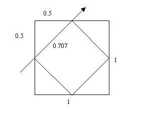
Figure 7: Maximum Skipped Segment Length within a Pixel
EXTENSION TO TRACKING IN THREE DIMENSIONS
Discussion of the three-dimensional algorithms can be facilitated by a sample problem. The starting point, P0, will be (0, 5/6, 2 1/2) or approximately (0.000, 0.833, 2.500). The direction vector will be (1/3, 1, 9/16) which is approximately (0.279, 0.837, 0.471) after normalization. This ray and its projections onto the x-y and y-z planes are shown in Figure 8.
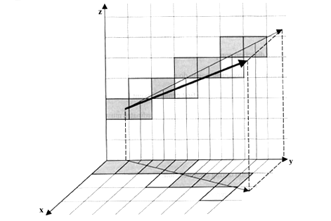
Figure 8: Sample Three-Dimensional Line
Representative Elements Intersected by Ideal Line Examined
Representative elements along an ideal line in three dimensions can be investigated much the same as those in the two-dimensional case. As before, the algorithm can step in one-unit increments in the direction varying the most and at each step find a representative value for each of the other two components. The centered value of the most rapidly varying component will be used as the point to find corresponding values for the other two components. Using a centered value is more representative than using a value near either edge. Additionally, a centered value produces the tightest bound for minimizing the lengths of skipped line segments through univels. The error analysis will be given later.
Since the initial point is not likely centered in the direction of the most rapidly varying direction component, computation of the first centered point is the most time-consuming. Subsequent points do not require the costly initialization stage. The initial centered point should be the first centered point from the initial point in the direction of the ray. Initial values for the other two coordinates must be calculated for determination of the initial values of the error terms.
After initialization, the algorithm proceeds by always stepping one unit in the primary direction during each iteration. The other two components are independently incremented (or decremented) when an individual error term exceeds the threshold. Here, the error is designed so the corresponding component will need to be updated when the error is greater than or equal to zero.
As described earlier, a floating point value f between -1.0 and 1.0 will be represented by integer M where M=f*2N and N is equal to 2 less than the number of bits used to represent an integer. Figure 9 illustrates how the error can be calculated for z based on the first centered y. The calculation is similar for x. For the case of z, the first centered value gives z=2.875. Since z is increasing, z has traveled 0.875 units towards the next univel but must still travel at least 0.125 units before z should be increased. In the floating point version, the error could be initialized to E=–0.125 and would increase by 0.5625 for each step of y since z increases by 0.5625 units for every unit step in y, based on the direction vector. When the error is greater than or equal to 0, z will be increased. As described before, the algorithm presented here will use integers to represent –0.125, 0.5625, etc. The stored integer value is simply the floating-point value multiplied by a very large number.
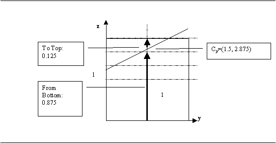
Figure 9: Calculation of an Initial Error Term for the Centered Y-Value
Since this algorithm does not examine all univels intersected by the ideal line, it is evident that a point of intersection of the line with a new material type will sometimes be skipped. However, there is an increased speed potential in examining less univels. An analysis of the speed, error, and implications of this error will be discussed later.
Code for the developed algorithm is given in the appendix.
Representative Elements Intersected for Sample Problem
For the sample problem depicted in Figure 8, Table 1 lists the array positions that will be examined and the actual coordinates of the sampling points based on centered values for y, the most rapidly varying component.
Table 1: Univel Locations and Sampling Points for Sample Problem
|
Array x |
Array y |
Array z |
X |
Y |
Z |
|
0 |
0 |
2 |
0.000 |
0.833 |
2.500 |
|
0 |
1 |
2 |
0.222 |
1.500 |
2.875 |
|
0 |
2 |
3 |
0.556 |
2.500 |
3.438 |
|
0 |
3 |
4 |
0.889 |
3.500 |
4.000 |
|
1 |
4 |
4 |
1.222 |
4.500 |
4.563 |
|
1 |
5 |
5 |
1.556 |
5.500 |
5.125 |
|
1 |
6 |
5 |
1.889 |
6.500 |
5.688 |
The representative univels examined for the sample problem are depicted in Figure 10. Additionally, the univels tracked through correspond to the dark gray elements in Figure 8.
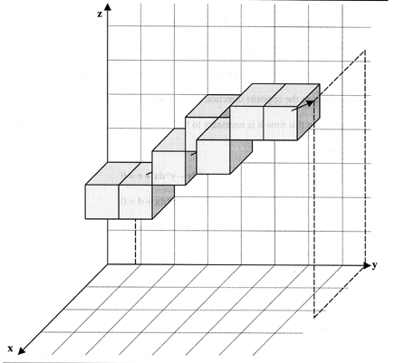
Figure 10: Graphical View of Intersected Representative Univels for Sample Problem
All Elements Intersected by Ideal Line Examined
The three-dimensional algorithm that tracks through all univels intersected by the ideal line is a bit more complicated than its two-dimensional counterpart. For reference, a grid point-based version of this algorithm can be found in the Graphics Gems series [7]. For the time being, assume that each of x, y, and z are increasing positively. In order to step to the next univel, the algorithm must determine which face of the univel is pierced as the ray exits to the next univel. Because the general direction of the ray is known, the three faces in the opposite direction can be easily eliminated. Again, implicit equations are used but this time it is necessary to look at three implicit equations that together describe the line:
x*dy – y*dx + c = 0
x*dz – z*dx + d = 0
y*dz – z*dy + e = 0
In this case, the error terms will be denoted errxy, errxz, and erryz. The sign of the errors at a specific point can be used to determine the next face-adjacent univel or equivalently the next univel in the array. The point of examination for each univel is the shared point of the three candidate faces that the ray can exit.
Initialization of the error terms requires looking at the distances from the starting point to each of the candidate faces and can be accomplished using floor and ceiling functions. Figure 11 shows these distances for the sample problem. Since each of x, y, and z are increasing, distances are those to the three positive-sided faces. The intersection of these three faces is the examination point, which is designated with a dot in Figure 11.
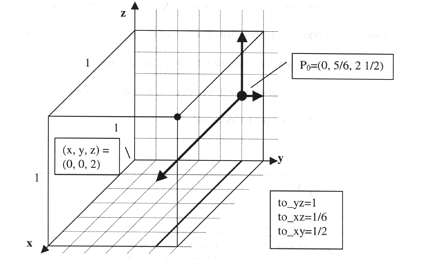
Figure 11: Distances to Each Candidate Face
The initial errors at P0 are zero. As an example, errxy at (x0, y0) is:
errxy(x0, y0) = x0*dy – y0*dx + c (initially 0)
The distance to the corner point is to_yz for x and to_xz for y. At this point, the error is:
errxy(x0+to_yz, y0+to_xz) = to_yz*dy – to_xz*dx
Since to_xz and to_yz are at most 1 and since dy and dx, taken from the normalized direction vector, are at most 1 in absolute value, the resultant error term can be stored as E=errxy*2N as described previously. For each step in x or y, errxy must now be increased by dy*2N or decreased by dx*2N, respectively.
The error terms can be compared against 0 to decide which coordinate to increase. Projections from one of the univels of the sample problem are given in Figure 12. The figure helps show how the decision can be made. Any error term can be examined first. Assume that errxz is examined first. The sign of the error term will be positive, indicating that x should not be increased. Now, y and z remain as candidates so erryz is checked next. The sign of erryz will be negative, indicating that z should not be increased. Therefore, y must be increased.
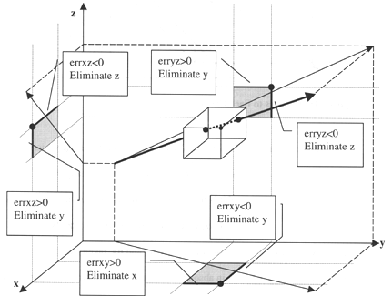
Figure 12: Examination of Error Terms to find which Coordinate to Increment
In the algorithm, one error is arbitrarily checked first and the sign determines which error term is to be checked next. The coordinate to update is determined after just two comparisons. As this coordinate is stepped by one unit, it has an effect on two of the three error terms. The error terms are updated to indicate a step was taken in the calculated direction.
As before, not much attention is paid as to what should be done if any error is precisely zero, indicating that more than one component should be increased. Here, speed is gained by using fewer comparisons for the trade-off that a rare univel will be investigated that only touched the line at a single point. However, it is not difficult to explicitly test the case of the errors being zero and incrementing more than one component as necessary.
One aspect of this algorithm can be exploited that is not of use in the case of traversal or simply marking examined univels. Since the traversal is ultimately used to determine an intersection point, knowing which face of the univel was first intersected can save time. Here, that can be easily managed. The algorithm that visits representative univels will require looking at each of three candidate faces and will therefore have some additional overhead when determining the final intersection. Although this algorithm tracks through more univels for a given segment length, the final calculation of an intersection point can be computed more quickly.
Code for the developed algorithm is given in the appendix.
All Elements Intersected for Sample Problem
For the sample problem depicted in Figure 8, Table 2 lists the array positions that will be examined and the actual coordinates of the face intersections in the case of examining all univels intersected by the ideal line. Additionally, the length of the line segment inside each univel is given.
|
Array x |
Array y |
Array z |
X |
Y |
Z |
Distance |
|
0 |
0 |
2 |
— |
— |
— |
0.199 |
|
0 |
1 |
2 |
0.056 |
1.000 |
2.594 |
0.863 |
|
0 |
1 |
3 |
0.296 |
1.722 |
3.000 |
0.332 |
|
0 |
2 |
3 |
0.389 |
2.000 |
3.156 |
1.195 |
|
0 |
3 |
3 |
0.722 |
3.000 |
3.719 |
0.597 |
|
0 |
3 |
4 |
0.889 |
3.500 |
4.000 |
0.398 |
|
1 |
3 |
4 |
1.000 |
3.833 |
4.188 |
0.199 |
|
1 |
4 |
4 |
1.056 |
4.000 |
4.281 |
1.195 |
|
1 |
5 |
4 |
1.389 |
5.000 |
4.844 |
0.332 |
|
1 |
5 |
5 |
1.481 |
5.278 |
5.000 |
0.863 |
|
1 |
6 |
5 |
1.722 |
6.000 |
5.406 |
0.996 |
|
2 |
6 |
5 |
2.000 |
6.833 |
5.875 |
0.199 |
All univels examined for the sample problem are depicted in Figure 13.
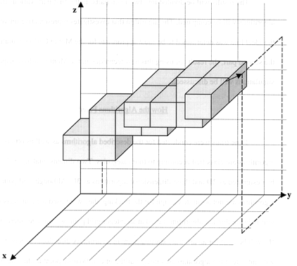
Figure 13: Graphical View of All Intersected Univels for Sample Problem
The results will be divided into two main parts. In the first part, various tracking algorithms will be compared. The algorithm that investigates representative univels along the ideal line was determined to be most appropriate for the Monte Carlo simulations. In the second part, the results of using this new technique in the Monte Carlo transport simulations will be discussed.
Time trials were conducted for the described algorithms as well as others. The algorithms are classified according to four categories. Two-dimensional algorithms will be designated as 2D and three-dimensional algorithms as 3D. Although grid point-based algorithms are not accurate enough for the tracking, they were used for comparison. ‘I’ will indicate that the algorithm started at an integer grid point with integer increments and ‘F’ will be used for an arbitrary starting point in an arbitrary direction. A second ‘I’ or ‘F’ will indicate if the algorithm uses integer arithmetic or floating point arithmetic in its inner loop. Finally, ‘A’ will indicate that the algorithm examines all elements along the path and ‘R’ will indicate only representative elements were examined. Hence, 3DFIR will indicate the three-dimensional algorithm that starts at an arbitrary position, is directed in an arbitrary direction, uses integer arithmetic for its main stepping loop, and only tracks through representative elements.
The integer starting point algorithms will be used as a basis of comparison for the floating start point algorithms. If times are close then it can be concluded that the generalized algorithms cannot perform much better. This assumes that the entirely integer-based algorithms are very near a lower bound for this type of tracking environment. Tracking through NURBS will not be analyzed in this section since it will be evident in the next section that the univel tracking methods are much faster. However, the question for the time being will be: How much of a performance trade-off do the algorithms take for the necessary added starting point precision and tracking precision?
The tests are a somewhat simplified version of shooting many random rays. To avoid undue complication, the algorithms used assume that x is the dominant direction of the ray and that each component of the direction vector is positive. It is assumed that through symmetry the other cases need not be considered. Another simplification is that the algorithms do not calculate a precise intersection with the final univel on the path. It is the tracking that is the greatest concern here and so it is assumed that a small amount of constant time can be added to each algorithm to account for the calculation of the final intersection point. Of course, this could vary slightly between the algorithms.
The test was conducted by generating a random data set of qualifying starting points and direction vectors. For the pure integer versions, the values of the starting points were truncated to integers and the value of each component of the direction vector was multiplied by a large constant and each component then truncated. The number of pixels (in the two-dimensional case) and univels (in the three-dimensional case) was varied over a large range of values and corresponding times required by each respective algorithm were recorded. The tests were run on a Linux-based Pentium Pro 150 with 96 MB of RAM. A plot of all times showing long-term performance is given in Figure 14.
Figure 14: Long-Term Performance of Various Tracking Algorithms
Additionally, a plot comparing the candidate algorithms (3DF--) for a smaller number of univels is given in Figure 15.
Figure 15: Typical Performance of Candidate Tracking Algorithms
There is a comparison problem that examining an equal number of univels does not mean equal distances were covered. When only representative univels are examined, a step from one element to the next is typically larger than if all stepped through univels are face-adjacent to each other. A correction factor for this will be examined later. The tests as given are intended to show how the algorithms compare for the same number of elements or, equivalently, for the same number of iterations.
As expected, the long-term performance of the four algorithms that relied on floating point calculations in their main loop performed worst. The algorithms that used integer arithmetic in their main loops but added the precision of using floating point starting points and floating point direction vectors performed, on average, approximately the same as their counterparts that used integers throughout.
The y-intercept of each line indicates the initialization time required for each algorithm. This is of importance when only a small number of univels are to be examined for a given intersection test. Fifteen univels is a good estimate of an average number of univels that must be examined for a given intersection test in the current Monte Carlo simulations.
Tables 3, 4, 5, and 6 summarize the performance of four candidate algorithms in the cases of long-term performance, initialization performance, performance for 10 univels, and performance for 20 univels, respectively.
Table 3: Best to Worst Performance for 1000 Univels
|
3DFIR |
3DFIA |
3DFFA |
3DFFR |
|
|
Relative Time |
1.00 |
1.32 |
3.93 |
7.18 |
Table 4: Best to Worst Performance for Initialization
|
3DFFA |
3DFFR |
3DFIA |
3DFIR |
|
|
Relative Time |
1.00 |
1.42 |
1.65 |
2.12 |
Table 5: Best to Worst Performance for 10 Univels
|
3DFIA |
3DFIR |
3DFFA |
3DFFR |
|
|
Relative Time |
1.00 |
1.14 |
1.25 |
2.10 |
Table 6: Best to Worst Performance for 20 Univels
|
3DFIA |
3DFIR |
3DFFA |
3DFFR |
|
|
Relative Time |
1.00 |
1.04 |
1.62 |
2.80 |
Somewhere between 3 to 7 univels is where both 3DFI algorithms start having better performance than the two 3DFF algorithms. Since it is assumed that most intersections will require investigating more than 3 to 7 univels and since the longer intersections will have more of an effect on the overall time, it is evident that the algorithms that use integer arithmetic in their inner loops should be used in most cases.
For the general problem, 3DFIA and 3DFIR are both candidates. Of course, 3DFIR can only be used when it is allowable to skip some univels and miss some potential intersections. Rates given so far measure univels examined. Another measure is total tracking distance. 3DFIA does not travel as far as 3DFIR when tracking through the same number of univels. A multiplication factor will be derived to compare these algorithms on equal terms of distance covered.
More data for the timing tests are given in the appendix.
Error Analysis of Only Examining Representative Univels along the Ideal Line
For the Monte Carlo problem at hand, intersections missed by 3DFIR have been found to not be a problem. On the contrary, they have more good side effects than bad. In the case of tracking through regions of the head, locality of regions is assumed. That is, regions are generally found in localized globs rather than random spread-out points. In this case, when a new material is entered, it is typical that the continuation of this line will continue to pass through at least a few univels of the same material. For this reason, 3DFIR does not miss most intersections although it may appear that a missed univel could result in a slightly greater distance-to-intersection reported. However, three candidate planes are examined when the point of intersection is being determined. The candidate planes do not necessarily correspond to the calculated univel. They are simply the past three x-y, x-z, and y-z planes, or faces, intersected by the line and so correspond to the current univel and two previous univels (not necessarily the past two intersected univels). This examination of previous univels makes it likely that the resultant intersection point will be exact.
When an intersection is missed entirely, it is due to the ray entering the new material only briefly through a small portion of a univel and then immediately returning to the original material. For a univel of dimensions a mm x b mm x c mm, it is relatively straightforward to calculate that all univels intersected by a line segment of at least sqrt(a2+b2+c2)/2 mm are examined. This is equal to half the length of the main diagonal of the univel. See Figure 7 for the two-dimensional analog. In the case of the missed intersections, the amount of material through which the ray passes is so small that it is not necessary to proceed with the transport calculations for the intersection. On the contrary, these extra calculations do little to affect the overall problem but will increase the time required for the simulation. This, of course, relies on a small univel size compared to the mean-free path of the particles being examined. This is satisfied in the current simulations and should hold true in the future assuming imaging devices remain unchanged or become more resolute.
Analysis of Greater Distance Covered in Examining Only Representative Univels Along the Ideal Line
Earlier comparisons gave timings based on different algorithms tracking through the same number of elements. However, tracking through only representative elements rather than all elements covers more distance for the same number of univels examined. In general, however, a simple multiplication factor can be derived to estimate the proportionality constant that exists between the two distances covered for the same number of univels.
It is easy to analyze the extreme cases when the ray moves parallel to an axis or when the ray moves equally in all directions. If the ray moves parallel to an axis, both algorithms track through all univels and the proportionality constant is therefore 1.0. In the case of all directions varying equally, it takes three steps for the algorithm tracking through all univels to increase each of x, y, and z. The algorithm investigating representative elements will increase whichever component it arbitrarily decided was changing most rapidly and at the same time see that it must also correspondingly increase each of the other two components. What was achieved in one step by the representative tracking algorithm took three steps in the other algorithm. Hence, the representative tracking algorithm covers a distance 3.0 times as great as the competing algorithm in this worst case while stepping through the same number of univels. Therefore, the average proportionality constant must lie between these two extremes of 1.0 and 3.0.
To think of this another way, this is similar to considering two different metrics for distance from a source univel to a destination univel. The algorithm tracking through all elements takes the unit distance between univels in each of x, y, and z and sums them to calculate the number of univels examined. The representative tracking algorithm examines only the maximum of the three components.
For the continuous case, assume a sphere of radius r. The continuous and discrete cases should be similar Assume that a ray starts at the center of the sphere and moves in an arbitrary direction to its surface. The ratio between the average number of univels tracked through in 3DFIA and 3DFIR is:
average(|x|+|y|+|z|) over the surface of the sphere
_________________________________________
average(max(|x|, |y|, |z|)) over the surface of the sphere
In both cases, x2+y2+z2=r2. Empirical trials show that this ratio is approximately 1.95. In other words, the representative element tracking ray will travel about twice as far, on average, while investigating the same number of univels as the algorithm that tracks through all univels. Because of this substantial difference, it is optimal to use the representative tracking algorithm whenever it is estimated that more than 4 univels will be tracked through in computing an intersection. (Tracking through 4 univels with 3DFIR takes approximately the same time as tracking through 8 univels with 3DFIA based on the appendix data.) However, the difference is not substantial when tracking through a small number of univels. If tracking through 10 univels in the 3DFIR algorithm requires 1 time unit, equivalent tracking through 20 univels in the 3DFIA algorithm requires approximately 1.17 time units.
Monte Carlo Transport Simulation Results
The univel geometry and representative univel tracking technique, 3DFIR, was tested using the rtt_MC Monte Carlo module [8] of the BNCT treatment planning software. Testing was performed using Linux-based Pentium Pro systems. A model, previously constructed from medical images of a male volunteer, was used to compare processor times and accuracy in the simulated irradiation. Figure 16 shows a wire frame representation of the NURBS surfaces originally reconstructed from the images. For this simple model only the outer surfaces of the head, the brain, and a simulated target volume were represented. Figure 17 shows a two-dimensional raster image of the model including the neutron beam delimiter in use for the human clinical trials at Brookhaven National Laboratory Medical Research Reactor (BMRR) [9].
Figure 16: Wireframe Representation of Surfaces for Head, Brain and Target Regions
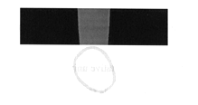
Three different geometric representations were calculated. For the current patient calculations, the NURBS representation is used for the patient geometry and analytical surfaces. Combinatorial Geometry (CG) [10] is used to represent the neutron beam regions. These results were compared to a case where just the patient geometry used the univel representation and to a case where all regions, including the beam geometry, were represented as univels. For each case, 2x106 neutron history simulations and 1x106 gamma ray simulations were performed. Timing comparisons are shown in Table 7.
Table 7: Processor Time Requirements for Patient Irradiation Simulation
|
Geometry PatientRepresentation Beam |
Time (Minutes) |
Time Relative to NURBS |
|
|
NURBS |
CG |
332 |
1/1 |
|
Univels |
CG |
41 |
1/8 |
|
Univels |
Univels |
22 |
1/15 |
In some cases, due to round off, the Monte Carlo software detects an impossible particle location situation and must discard the particle since it is not possible to know what to do next. This is referred to as a ‘lost particle’ and ‘lost particles’ are common in NURBS geometries when surfaces are near each other. For this simulation, there were four ‘lost particles’ for the NURBS case and none for the univel cases. Often, there are more ‘lost particles’ in NURBS geometries. Lost particles have yet to be encountered using the univel tracking routines. This indicates, with all things otherwise being equal, that the univel method will be more precise. For these three cases, a detailed check showed all results to be within the statistical errors of the Monte Carlo process.
A profile of the time requirements showed that the relative ray trace time for the NURBS geometry was 64%. This was reduced to 6% for the case with univels. In another test case, a timing comparison was made using a different number of univels to determine the sensitivity of time requirements to the number of univels, or precision of the geometric representation. For this case, the geometry was an H2O cylinder with a simulated irradiation in the Brookhaven neutron beam. For this simple geometry problem, the CG model required about 20% less time than the univel model using 13,520 univels. When the spacing along the cylinder axis was reduced to construct a univel model having 3.28x106 univels (a factor of 243 increase in the number of univels), the processing time was increased by only 74%. For more complicated models where several CG objects are required to represent the geometry, univel tracking will be more efficient than CG tracking.
Univel-based modeling relying on uniformity and integer-based arithmetic works well and tracking techniques based on this are substantially faster than the methods based on more compact NURBS representations that rely heavily on floating point arithmetic.
Because of the significant gain in speed with no significant increase in error, the representative univel tracking method is a good method for Monte Carlo transport simulations. Skipping over some univels has little effect on accuracy. Those times that intersections were missed, it was probably better to skip them as they proved to be insignificant and would only increase computation time with little or no gain in accuracy. A typical 1 mm resolution is already quite fine and so skipping such a tiny volume element is not substantial, especially considering that the original segmentation of the images cannot be expected to be accurate to the original pixel level. Tables 1 and 2 show that the lengths of line segments through the skipped univels are short compared to the lengths through the examined univels. In the case that greater accuracy is obtained in defining the regions, the smaller univels will allow increased accuracy at the expense of requiring more space and slightly more time. With the new methods, such a small fraction of time is spent in ray tracking that further optimizations would do little to affect the simulation time. This would only be worthwhile if the number of univels used to represent the geometry grows by a substantial factor. If 20 univels were tracked through on average at a 256x256x40 resolution, 80 univels would be tracked through on average at a 1024x1024x160 resolution. Even with this tremendous jump, the amount of time spent tracking would barely double. The overall simulation would hardly be affected since tracking has now been reduced to approximately 6% of the total simulation time.
Using a derivative of the 3DFIA or 3DFFR algorithms may optimize a remaining portion of the Monte Carlo simulations. The greatest percentage of simulation time is now spent in the tally portion of the code. One part of this stage requires voxels to be stepped through, one at a time, calculating the distance through each voxel. Both 3DFIA and 3DFFR algorithms are ideal for this type of tracking since they are fast, track through all voxels, and can quickly compute distances through voxels by keeping track of entered and exited faces. Use of these algorithms for the tally portions of the simulations is being investigated and looks promising. In the current simulations, only a small number of voxels are tracked through so the speedup may be only a small factor. However, large speedups may be anticipated in future simulations that may require deeper penetrating particles.
1. Wessol, D.E.; Wheeler, F.J.; Babcock, R.S; Starkey, J.D., "Medical Image Reconstruction and Geometry Generation Software", 5th International Symposium on Neutron Capture Therapy, Columbus, Ohio, September 13-17, 1992.
2. Wessol, D.E.; Babcock, R.S.; Wheeler, F.J.; Harkin, G.J.; Voss, L.L.; Frandsen, M.W., "BNCT_Rtpe: BNCT Radiation Treatment Planning Environment User’s Manual", Version 2.2, February 21, 1997, http://id.inel.gov/cart/rtpe-manual/sec00.html.
3. Capala, J.; Chadha, M.; Wheeler, F.J.; Wessol, D.E.; Atkinson, C.A., "Radiotherapy Planning for the Brookhaven Trials of BNCT for Human Gliomas", Trans. Am. Nucl. Soc., 69, 470, 1995.
4. Glassner, A.S., Graphics Gems, Academic Press, Inc., San Diego, California, pp. 246-248, 1990.
5. Bresenham, J.E., "Algorithm for Computer Control of a Digital Plotter", IBM System Journal, Vol. 4, pp. 25-30, 1965.
6. Foley, J.D.; van Dam, A.; Feiner, S.K.; Hughes, J.F.; Phillips, R.L., Introduction to Computer Graphics, Addison-Wesley Publishing Company, Inc., Reading, Massachusetts, pp. 70-76, 1994.
7. Heckbert, P.S., Graphics Gems Volume IV, Academic Press, Inc., San Diego, California, pp. 366-368, 1994.
8. Wheeler, F.J.; Wessol, D.E.; Wemple, C.A. The rtt_MC Software Module for Treatment Planning. In:Venhuizen, J.R., ed. INEEL BNCT Research Program Annual Report 1996. Idaho National Engineering and Environmental Laboratory, INEL/EXT-97-00319, 1997.
9. Wheeler, F.J.; Parsons, D.K.; Nigg, D.W.; Wessol, D.E.; Miller, L.G.; Fairchild, R.G., Reactor Physics Design for the Brookhaven Medical Research Reactor Epithermal Neutron Source. In: Harling, O.K., Bernard, J.A., Zamenhof, R., eds., Neutron Beam Design, Development, and Performance for Neutron Capture Therapy. New York: Plenum Press, pp. 83-95, 1990.
10. E. Straker, P. Stevens, D. Irving, and V. Cain, "MORSE-CG, General Purpose Monte-Carlo Multigroup Neutron and Gamma-Ray Transport Code with Combinatorial Geometry", Radiation Shielding Information Center (ORNL) Report Number CCC-203, 1976.
Three-Dimensional Algorithm to Examine Representative Univels along Line
/* This algorithm will terminate after looping through NUMSTEPS univels.
* The code given is for the case of x varying most rapidly, positive
* initial coordinates, and positive direction vector components. Other * cases are similar but would clutter the logic.
*/
void line3DFIR(double * pts, double * dir, int NUMSTEPS) {
int i, incrx1, incrx2, incrxy, incrxz, px, py, pz, errxy, errxz;
double x, y, z, xdir, ydir, zdir, mxy, mxz, fcx, fy, fz;
x = *pts++; /* Position (x, y, z) */
y = *pts++;
z = *pts;
xdir = dir++; /* Direction (xdir, ydir, zdir */
ydir = *dir++;
zdir = *dir;
mxy = ydir/xdir; /* Slopes */
mxz = zdir/xdir;
incrx1 = mxy*LARGE_INT; /* Increments for error terms */
incrxy = incrx1-LARGE_INT;
incrx2 = mxz*LARGE_INT;
incrxz = incrx2-LARGE_INT;
px = INT_FLOOR_FCN(x+0.5); /* Center ray for primary direction */
fcx = (double)px + 0.5;
fy = y + mxy*(fcx-x);
fz = z + mxz*(fcx-x);
py = INT_FLOOR_FCN(fy);
pz = INT_FLOOR_FCN(fz);
/* Compute initial error terms */
errxy = (fy - (double)py)*LARGE_INT+incrxy;
errxz = (fz - (double)pz)*LARGE_INT+incrxz;
/* Examine the material at the initial position */
EXAMINE_3D(INT_FLOOR_FCN(x), INT_FLOOR_FCN(y), INT_FLOOR_FCN(z));
/* Actual tracking loop begins here ------------------------*/
for (i=0; i<NUMSTEPS; i++) {
/* Examine current material; typically stop when different */
EXAMINE_3D(px, py, pz);
px++; /* Primary direction always increased */
if (errxy>=0) { /* Adjust y and xy errors */
errxy+=incrxy;
py++;
} else {
errxy+=incrx1;
}
if (errxz>=0) { /* Adjust z and xz errors */
errxz+=incrxz;
pz++;
} else {
errxz+=incrx2;
}
}
}
Three-Dimensional Algorithm to Examine All Univels Intersected by Line
/* This algorithm will terminate after looping through NUMSTEPS univels.
* The code is for the general case of an arbitrary start position and
* an arbitrary unit vector direction.
* Governing Equations: x*dy - y*dx + c = 0 */
* x*dz - z*dx + d = 0 */
* y*dz - z*dy + e = 0 */
void line3DFIA(double * pts, double * dir, int NUMSTEPS) {
double x, y, z, xdir, ydir, zdir, xposdir, yposdir, zposdir,
to_xy_floor, to_xz_floor, to_yz_floor, to_xy, to_xz, to_yz,
inv_xdir, inv_ydir, inv_zdir;
int j, px, py, pz, incrx, incry, incrz, errxy, errxz, erryz,
move_x, move_y, move_z;
x = pts++; /* Position (x, y, z) */
y = *pts++;
z = *pts;
xdir = xposdir = dir++; /* Direction (xdir, ydir, zdir */
ydir = yposdir = *dir++;
zdir = zposdir = *dir;
if (xposdir<0.0) xposdir = -xposdir;
if (yposdir<0.0) yposdir = -yposdir;
if (zposdir<0.0) zposdir = -zposdir;
incrx = xposdir*LARGE_INT; /* Increments for error terms */
incry = yposdir*LARGE_INT;
incrz = zposdir*LARGE_INT;
px = INT_FLOOR_FCN(x); /* Current array position */
py = INT_FLOOR_FCN(y);
pz = INT_FLOOR_FCN(z);
to_yz_floor = x-(double)px; /* Distances from edges */
to_xz_floor = y-(double)py;
to_xy_floor = z-(double)pz;
if (xdir>0.0) { /* Initialize for x */
to_yz = 1.0-to_yz_floor;
move_x = 1;
inv_xdir = 1.0/xdir;
} else if (xdir<0.0) {
to_yz = to_yz_floor;
move_x = -1;
inv_xdir = 1.0/xdir;
} else {
/* uncommon special case */
to_yz = to_yz_floor;
if (to_yz<0.5) to_yz = 1.0-to_yz;
move_x = 0;
inv_xdir = 0.0;
}
if (ydir>0.0) { /* Initialize for y */
to_xz = 1.0-to_xz_floor;
move_y = 1;
inv_ydir = 1.0/ydir;
} else if (ydir<0.0) {
to_xz = to_xz_floor;
move_y = -1;
inv_ydir = 1.0/ydir;
} else {
/* uncommon special case */
to_xz = to_xz_floor;
if (to_xz<0.5) to_xz = 1.0-to_xz;
move_y = 0;
inv_ydir = 0.0;
}
if (zdir>0.0) { /* Initialize for z */
to_xy = 1.0-to_xy_floor;
move_z = 1;
inv_zdir = 1.0/zdir;
} else if (zdir<0.0) {
to_xy = to_xy_floor;
move_z = -1;
inv_zdir = 1.0/zdir;
} else {
/* uncommon special case */
to_xy = to_xy_floor;
if (to_xy<0.5) to_xy = 1.0-to_xy;
to_xy = 1.0;
move_z = 0;
inv_zdir = 0.0;
}
/* Compute initial error terms */
errxy = (yposdir*to_yz - xposdir*to_xz)*LARGE_INT;
errxz = (zposdir*to_yz - xposdir*to_xy)*LARGE_INT;
erryz = (zposdir*to_xz - yposdir*to_xy)*LARGE_INT;
/* Examine the material at the initial position */
EXAMINE_3D(px, py, pz);
/* Actual tracking loop begins here ------------------------*/
for (i=0; i<NUMSTEPS; i++) {
if (erryz>0) { /* don't change y */
if (errxz>0) { /* don't change y or x */
pz+=move_z;
errxz-=incrx;
erryz-=incry;
} else { /* don't change y or z */
px+=move_x;
errxy+=incry;
errxz+=incrz;
}
} else { /* don't change z */
if (errxy>0) { /* don't change z or x */
py+=move_y;
errxy-=incrx;
erryz+=incrz;
} else { /* don't change z or y */
px+=move_x;
errxy+=incry;
errxz+=incrz;
}
}
/* Examine current material; typically stop when different */
EXAMINE_3D(px, py, pz);
}
}
Timing Comparisons of Various Algorithms through Same Number of Elements
The following table compares various tracking algorithms with varying numbers of iterations based on the number of elements (pixels or univels) examined. The number of elements examined varies from 1 to 1000. To give representative values, each time measured is the sum of the time required to track 100,000 rays through the given number of elements. Times are given in seconds.
|
Elems. |
2D IIR |
2D FIR |
2D FFR |
2D IIA |
2D FIA |
2D FFA |
3D IIR |
3D FIR |
3D FFR |
3D IIA |
3D FIA |
3D FFA |
|
1 |
0.05 |
0.36 |
0.27 |
0.04 |
0.26 |
0.15 |
0.07 |
0.55 |
0.37 |
0.07 |
0.43 |
0.26 |
|
2 |
0.07 |
0.37 |
0.32 |
0.06 |
0.28 |
0.18 |
0.09 |
0.57 |
0.48 |
0.09 |
0.45 |
0.31 |
|
3 |
0.08 |
0.38 |
0.38 |
0.08 |
0.29 |
0.20 |
0.11 |
0.59 |
0.59 |
0.11 |
0.48 |
0.37 |
|
4 |
0.10 |
0.39 |
0.45 |
0.10 |
0.31 |
0.23 |
0.12 |
0.61 |
0.68 |
0.14 |
0.50 |
0.43 |
|
5 |
0.11 |
0.41 |
0.50 |
0.11 |
0.32 |
0.26 |
0.16 |
0.62 |
0.78 |
0.17 |
0.54 |
0.50 |
|
6 |
0.13 |
0.43 |
0.58 |
0.12 |
0.35 |
0.28 |
0.17 |
0.66 |
0.91 |
0.19 |
0.55 |
0.57 |
|
7 |
0.14 |
0.44 |
0.64 |
0.14 |
0.35 |
0.31 |
0.19 |
0.67 |
1.01 |
0.22 |
0.58 |
0.62 |
|
8 |
0.15 |
0.45 |
0.70 |
0.15 |
0.37 |
0.33 |
0.21 |
0.68 |
1.11 |
0.24 |
0.59 |
0.68 |
|
9 |
0.17 |
0.47 |
0.76 |
0.17 |
0.38 |
0.35 |
0.23 |
0.70 |
1.22 |
0.26 |
0.62 |
0.73 |
|
10 |
0.19 |
0.48 |
0.82 |
0.18 |
0.40 |
0.37 |
0.24 |
0.72 |
1.32 |
0.29 |
0.63 |
0.79 |
|
20 |
0.30 |
0.59 |
1.42 |
0.30 |
0.52 |
0.59 |
0.40 |
0.87 |
2.35 |
0.50 |
0.84 |
1.36 |
|
30 |
0.42 |
0.70 |
2.01 |
0.43 |
0.65 |
0.80 |
0.55 |
1.01 |
3.37 |
0.71 |
1.03 |
1.93 |
|
40 |
0.54 |
0.80 |
2.61 |
0.56 |
0.76 |
1.01 |
0.70 |
1.15 |
4.39 |
0.91 |
1.23 |
2.49 |
|
50 |
0.66 |
0.91 |
3.20 |
0.68 |
0.88 |
1.21 |
0.84 |
1.29 |
5.42 |
1.11 |
1.42 |
3.05 |
|
60 |
0.78 |
1.01 |
3.80 |
0.80 |
1.00 |
1.42 |
0.99 |
1.42 |
6.44 |
1.32 |
1.60 |
3.62 |
|
70 |
0.89 |
1.11 |
4.40 |
0.92 |
1.12 |
1.63 |
1.14 |
1.56 |
7.45 |
1.51 |
1.79 |
4.18 |
|
80 |
1.01 |
1.22 |
4.99 |
1.04 |
1.24 |
1.84 |
1.28 |
1.71 |
8.48 |
1.71 |
1.97 |
4.74 |
|
90 |
1.12 |
1.32 |
5.58 |
1.17 |
1.36 |
2.04 |
1.43 |
1.84 |
9.51 |
1.91 |
2.16 |
5.30 |
|
100 |
1.24 |
1.43 |
6.18 |
1.29 |
1.47 |
2.24 |
1.58 |
1.97 |
10.53 |
2.11 |
2.35 |
5.86 |
|
200 |
2.39 |
2.48 |
12.13 |
2.51 |
2.67 |
4.31 |
3.03 |
3.35 |
20.76 |
4.09 |
4.19 |
11.45 |
|
300 |
3.54 |
3.52 |
18.08 |
3.73 |
3.84 |
6.36 |
4.48 |
4.72 |
31.00 |
6.06 |
6.03 |
17.05 |
|
400 |
4.70 |
4.57 |
24.04 |
4.95 |
5.03 |
8.42 |
5.93 |
6.08 |
41.24 |
8.03 |
7.86 |
22.64 |
|
500 |
5.85 |
5.62 |
30.00 |
6.17 |
6.22 |
10.47 |
7.38 |
7.45 |
51.47 |
9.99 |
9.71 |
28.23 |
|
600 |
7.00 |
6.66 |
35.95 |
7.39 |
7.39 |
12.52 |
8.83 |
8.82 |
61.70 |
11.96 |
11.53 |
33.82 |
|
700 |
8.15 |
7.71 |
41.90 |
8.61 |
8.58 |
14.58 |
10.28 |
10.19 |
71.94 |
13.93 |
13.37 |
39.40 |
|
800 |
9.31 |
8.76 |
47.85 |
9.83 |
9.77 |
16.64 |
11.73 |
11.55 |
82.18 |
15.89 |
15.21 |
44.98 |
|
900 |
10.46 |
9.80 |
53.81 |
11.05 |
10.95 |
18.69 |
13.18 |
12.91 |
92.42 |
17.85 |
17.04 |
50.58 |
|
1000 |
11.62 |
10.85 |
59.76 |
12.27 |
12.13 |
20.75 |
14.63 |
14.28 |
102.60 |
19.83 |
18.87 |
56.17 |